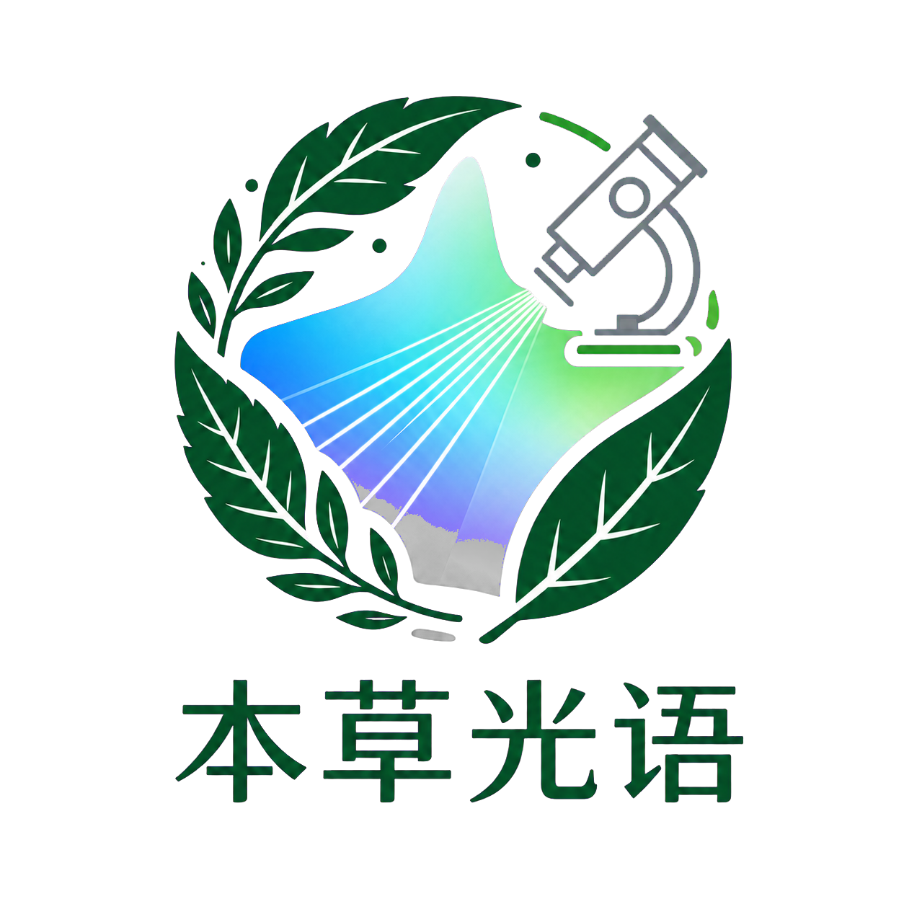
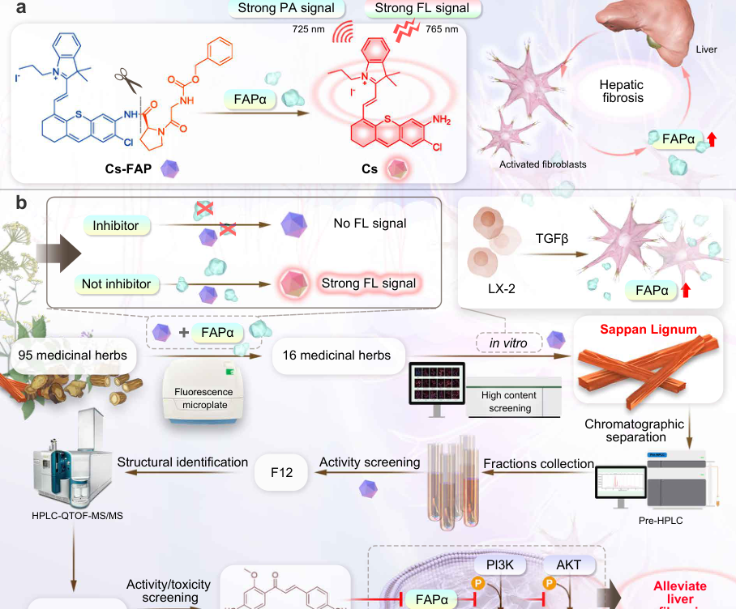
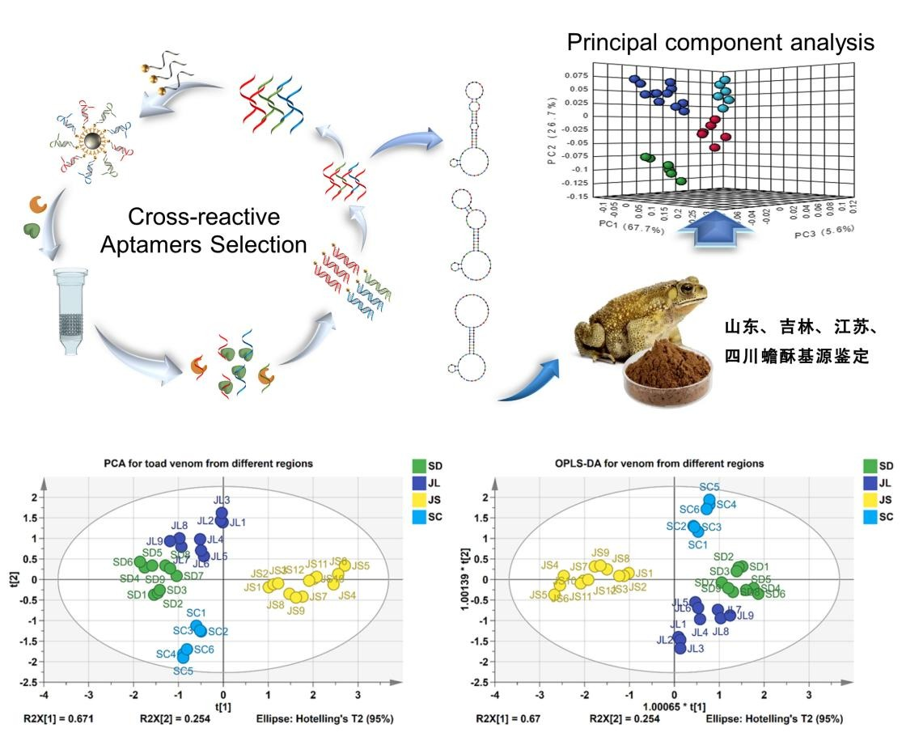
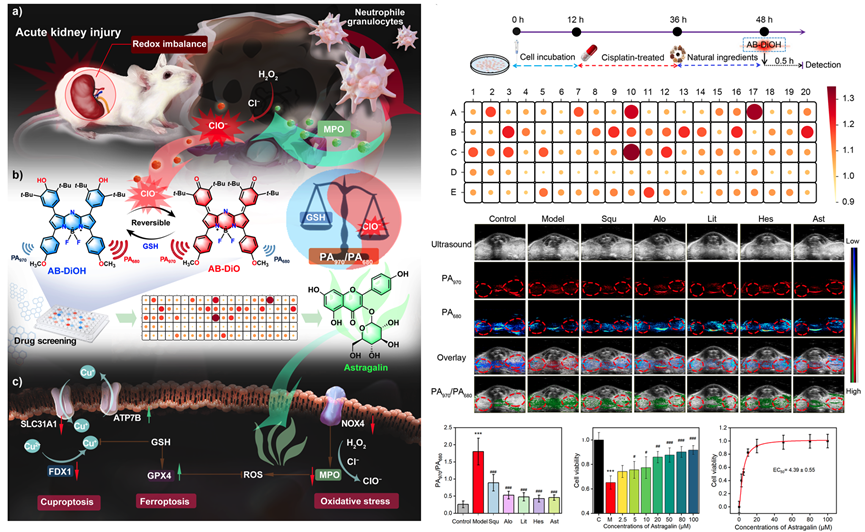
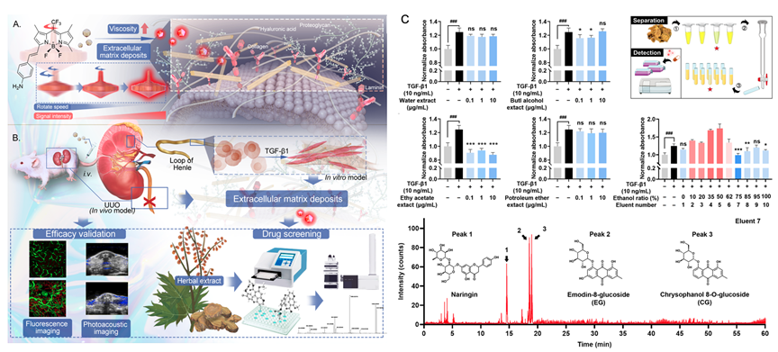
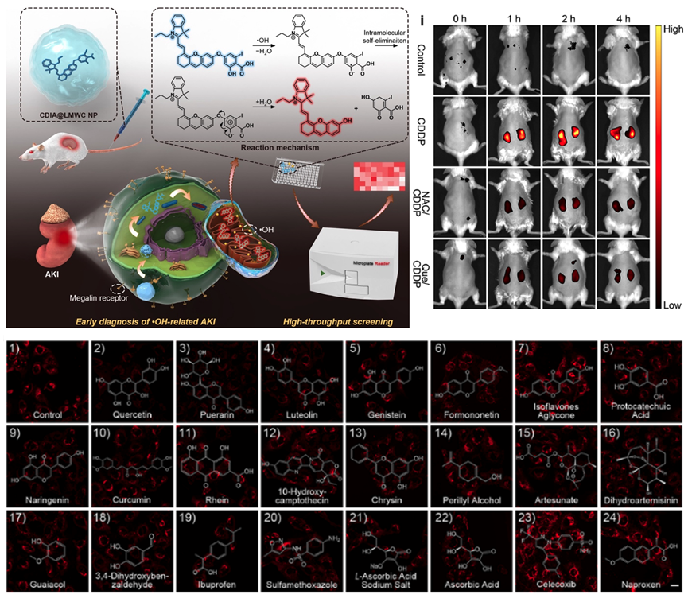

01
01中药资源与天然产物
药用植物、药食同源资源与天然化合物库

本草光语·大健康研究实验室HERBAL PHOTONICS & HEALTH RESEARCH LABORATORY以本草为源、以光为引，依托光学探针与光谱成像技术，可视化解析药用植物活性成分及其药理机制，结合高内涵筛选与谱效导向，开展功效精准评价、健康干预和大健康产品创新研究。
本草蕴灵，光影探微。以光学技术赋能本草与大健康研究，以基础研究助力健康产业转化。
本草光语·大健康研究实验室隶属于中国药科大学中药资源系，依托光学探针与光谱成像技术，可视化解析药用植物活性成分及其药理机制，结合高内涵筛选、谱效导向等交叉技术推动中医药现代化与大健康研究。
实验室聚焦中药活性成分发掘、药效精准评价、作用机制解析与健康产品开发，服务疾病预防、健康干预与大健康产业创新。
“本草光语”以光电技术解码本草药用物质的分子密码；“大健康研究”进一步面向疾病预防、健康维护、精准干预与产品创新，让传统本草的健康价值实现可视化、精准化和数据化表达。
依托功能化光学探针与生物传感技术，实现中药作用靶标与药效核心指标的微量、精准、高效检测。
在细胞、组织、模式生物和整体动物多尺度层面，动态追踪疾病演化与中药干预规律。
整合高通量、高内涵筛选与光学成像表征，提升天然药用活性成分的发掘效率。
以分子可视化技术连接中药资源、生命过程、健康干预与大健康产品创新。
团队以光学探针和生物传感为核心技术，把中药资源发现、疾病标志物识别、活性成分筛选、功效评价、机制验证与大健康转化串联为完整研究闭环。
01药用植物、药食同源资源与天然化合物库

02FAPα、活性氧/氮、酶与微环境变化

03近红外荧光、光声、AIE与阵列传感

04细胞—组织—动物多层次可视化评价

05谱效导向、色谱分离与LC–MS结构解析
体内外功效、作用机制、健康干预与产品转化
形成从资源发现、精准评价到健康干预和大健康产品创新的交叉研究体系。

发展高灵敏、可激活的近红外荧光、光声及AIE探针，实现疾病进程和药物响应的时空可视化。
近红外荧光光声成像AIE探针贯通分子探针、高通量筛选、谱效导向分离与质谱鉴定，精准发现活性先导化合物。
高通量筛选谱效导向LC–MS构建适配体、荧光传感阵列及无标记检测方法，用于真伪与产地鉴别、成分定量和质量安全评价。
核酸适配体阵列传感产地溯源面向疾病预防、健康维护与精准干预，系统评价天然活性物质的功效、安全性与作用机制，推动药食同源资源和大健康产品创新。
精准功效评价健康干预大健康产品让研究形成可验证、可复用的技术链路。
点击代表性论文，查看科研图片、研究亮点与原文链接。
教师及科研人员、在读研究生与实验室校友共同构成开放、交叉、协作的研究团队。
记录研究进展、团队成长与学术交流。
与我们一起，看见本草与健康的更多可能。
欢迎具有中药学、天然产物、光学探针、生物传感、生物成像、健康科学、药物化学和人工智能药物发现背景的同学及合作者联系实验室。
共同推进中药资源、现代光学技术与大健康研究的交叉创新。